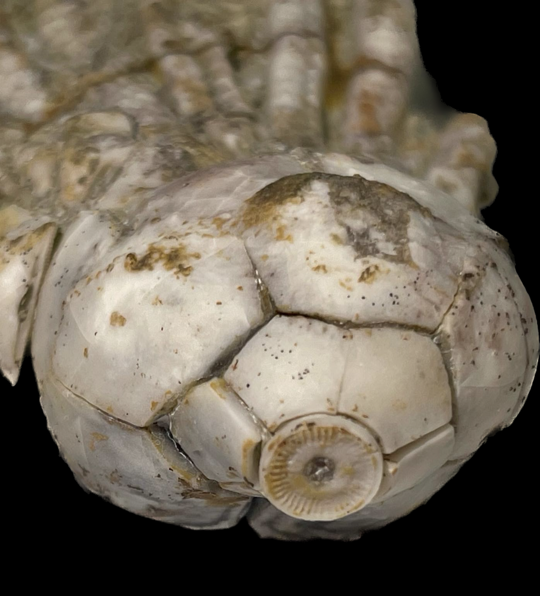
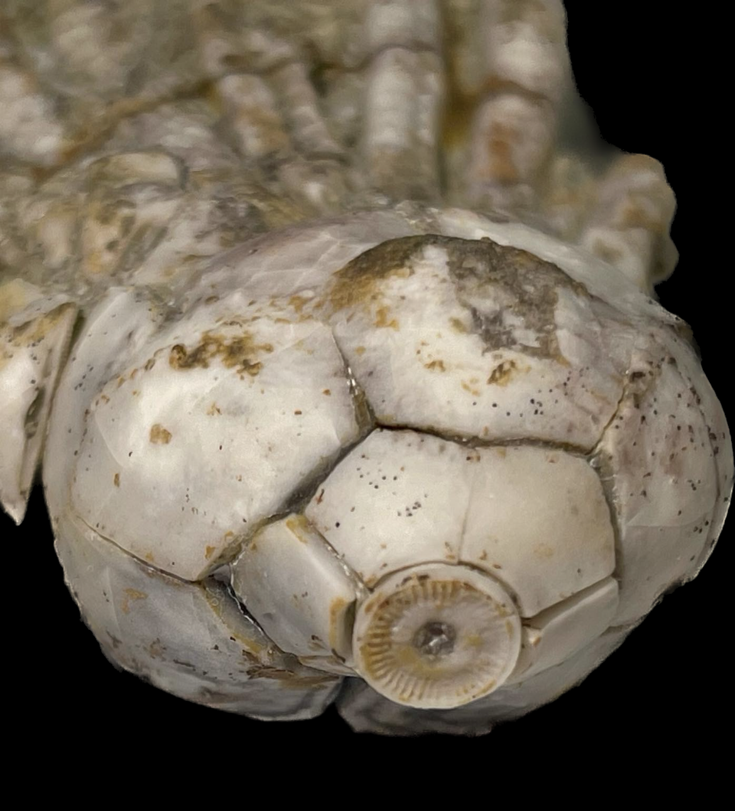

aff. Parulocrinus
Permian
Moran Formation
From near Woodson, Texas, USA
Size: 9 cm crown
This is a Permian-aged crinoid crown from Texas and one of my most unusual fossils. Before prep, I initially made the mistake of identifying it as "Ulocrinus sp." because of the significantly upflared, protruding flower-like infrabasal plates. However, according to Georgy Mirantsev the genus Ulocrinus has 10 biserial arms whereas my specimen has 16, specifically with four arms on the A, C and D rays, which is more consistent with the genus Parulocrinus. Even so, the upflared infrabasals are much more characteristic of genera such as Ulocrinus and decidedly atypical of Parulocrinus. Overall this is quite an odd specimen of uncertain identity. Permian crinoids from the US are even more obscure than Pennsylvanian ones, and this specimen may very well represent a new occurrence and taxon.

 
